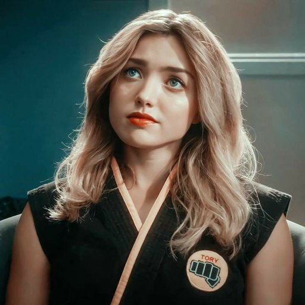
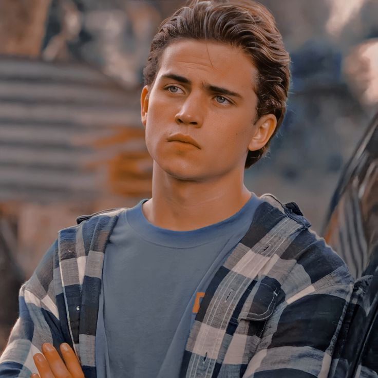
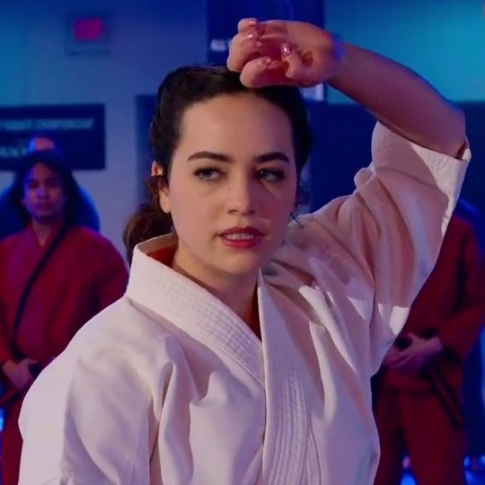
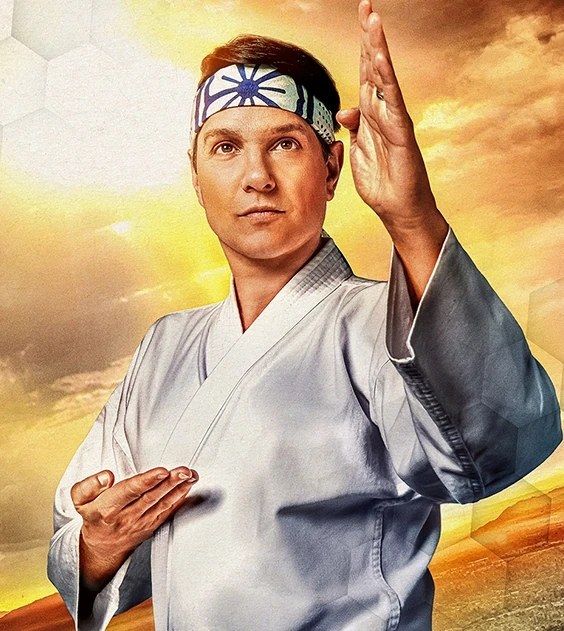
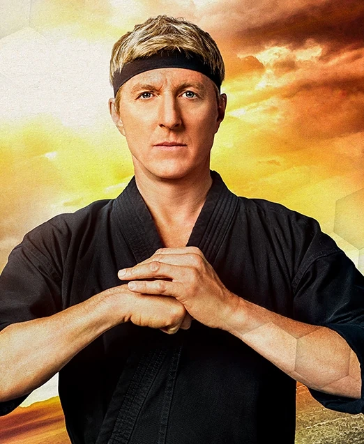

Xolo Maridueña also known as Miguel Diaz in Cobra Kai
Miguel is the neighbor of former karate champion Johnny Lawrence, who convinces Johnny to train him. Miguel helps him to reopen and establish a student base at Cobra Kai Dojo.

Peyton List also known as Tory Nichols in Cobra Kai
At the recently restored Cobra Kai Dojo, Tory enrolls as a student. Tory turns violent and resentful, notably against Samantha LaRusso, after succumbing to the brutal teachings of her sensei John Kreese.

Tanner Buchanan also known as Robby Keene in Cobra Kai
Shannon Keene, an alcoholic, and Johnny Lawrence, a sensei in karate, are the parents of Robby. As Daniel LaRusso entered Robby's life, he started to make him rethink his previous rule-breaking and troublemaking behavior.

Mary Mouser also known as Samantha LaRusso in Cobra Kai
She enrolls as the second student in the recently rebuilt Miyagi-Do Karate school and later becomes one of the top ones. Yet after the karate bout at West Valley High School and her conflict with Tory Nichols,
Cobra Kai's Senseis
CAST:
Definition:
MEET THEM NOW !!

Ralph Macchio also known as Daniel LaRusso in Cobra Kai
Daniel was a tormented high school kid whose life was transformed when he was mentored by a wise karate sensei who taught him both priceless life skills and self-defense. Daniel won two straight karate championships and defeated hostile opponents who challenged him by using this training to defend himself and others.

William Zabka also known as Johnny Lawrence in Cobra Kai
Johnny used to be the troublesome affluent boy from the Valley who began a 30-year-long rivalry with Daniel LaRusso, the new kid. He was the top pupil at the Cobra Kai dojo and was a dangerous opponent because to John Kreese's brutal martial arts instruction.